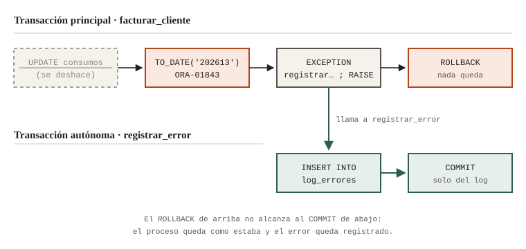
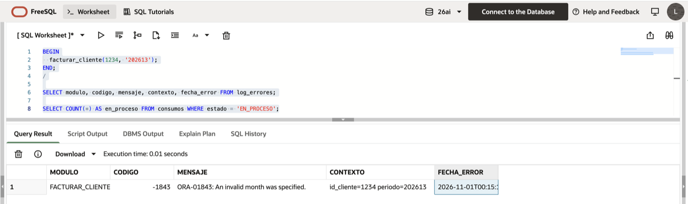

Errores de PL/SQL que todos cometemos (y yo también)
Si tuviera que escoger la línea de PL/SQL que más horas de soporte cuesta, sería esta:
EXCEPTION
WHEN OTHERS THEN
NULL;No lanza ningún error, no deja rastro y el proceso termina «bien». El problema aparece días después, cuando alguien pregunta por qué faltan datos y no hay nada que mirar. El título dice «y yo también» porque es cierto: yo también he escrito manejadores de errores de los que no me siento orgulloso. Estos son los cuatro errores que más veo y cómo los corrijo hoy.
1. Tragarse el error
WHEN OTHERS THEN NULL convierte cualquier falla en un éxito silencioso. Si de verdad hay un error que se puede ignorar, hay que nombrarlo: WHEN NO_DATA_FOUND THEN, o una excepción propia declarada con PRAGMA EXCEPTION_INIT. WHEN OTHERS debería terminar casi siempre en RAISE, después de dejar registro.
2. Guardar el log en la misma transacción
Este me parece el más traicionero, porque parece correcto:
EXCEPTION
WHEN OTHERS THEN
INSERT INTO log_errores (modulo, codigo, mensaje)
VALUES ('FACTURAR_CLIENTE', SQLCODE, 'falló');
RAISE;El INSERT en el log se ejecuta, pero hace parte de la misma transacción que falló. Cuando el error sube y alguien hace ROLLBACK (o Oracle lo hace solo), el registro se va junto con todo lo demás. El log queda vacío justo cuando más se necesita.
La solución es una transacción autónoma. Un procedimiento con PRAGMA AUTONOMOUS_TRANSACTION corre en su propia transacción, con su propio COMMIT, independiente de la del proceso que lo llamó:
CREATE OR REPLACE PROCEDURE registrar_error (
p_modulo IN VARCHAR2,
p_codigo IN NUMBER,
p_mensaje IN VARCHAR2,
p_contexto IN VARCHAR2 DEFAULT NULL
) IS
PRAGMA AUTONOMOUS_TRANSACTION; -- transacción propia
BEGIN
INSERT INTO log_errores (modulo, codigo, mensaje, contexto, traza)
VALUES (p_modulo, p_codigo, p_mensaje, p_contexto,
DBMS_UTILITY.FORMAT_ERROR_BACKTRACE);
COMMIT; -- confirma solo el log
END registrar_error;
/
3. Registrar sin contexto
Un log que solo dice ORA-01843: not a valid month sirve de poco a las 3 de la mañana. ¿Qué cliente? ¿Qué periodo? ¿En qué línea? SQLERRM no trae esa información. Por eso el procedimiento guarda, además del mensaje, el módulo, los parámetros con los que se estaba trabajando y FORMAT_ERROR_BACKTRACE, que dice la línea exacta donde nació el error:
EXCEPTION
WHEN OTHERS THEN
registrar_error(
p_modulo => 'FACTURAR_CLIENTE',
p_codigo => SQLCODE,
p_mensaje => SQLERRM,
p_contexto => 'id_cliente=' || p_id_cliente || ' periodo=' || p_periodo);
RAISE; -- registrar no es lo mismo que manejarFeuerstein arma un procedimiento de logging muy parecido en esta parte de su serie sobre excepciones, por si lo quieres ver construido paso a paso:
4. Capturar y no volver a lanzar
El último es primo del primero. El manejador registra el error muy juicioso y después no hace RAISE. El log queda perfecto, pero el proceso que llamó cree que todo salió bien y sigue adelante con datos a medias. Si en ese punto no sabes qué hacer con el error, regístralo y déjalo subir: alguien más arriba sí sabrá.
Una variante de lo mismo es reemplazar el error original por uno genérico con RAISE_APPLICATION_ERROR(-20001, 'Error en facturación'). El mensaje queda bonito, pero se pierden el código y la línea donde empezó todo. Si vas a usarlo, pasa TRUE como tercer parámetro: así Oracle conserva la pila de errores anterior debajo de tu mensaje.
La prueba
En sql/demo_errores.sql está todo junto: la tabla, el procedimiento de log y un facturar_cliente que falla a propósito con el periodo '202613' (no existe el mes 13) después de haber modificado consumos. Lo corrí en FreeSQL con el cliente 1234: el procedimiento marcó sus consumos como EN_PROCESO, falló en el TO_DATE y el error subió. Después conté los consumos en EN_PROCESO y me dio cero, o sea que el UPDATE se deshizo. Pero en LOG_ERRORES quedó la fila con el código, el mensaje y el contexto exacto.

Mi regla, en dos líneas
Mi regla hoy es corta: ningún WHEN OTHERS sin registro y sin RAISE, y ningún registro sin contexto. El log no es para el día en que todo funciona. Es para la madrugada en que algo falló y toca entender qué pasó sin poder reproducirlo.